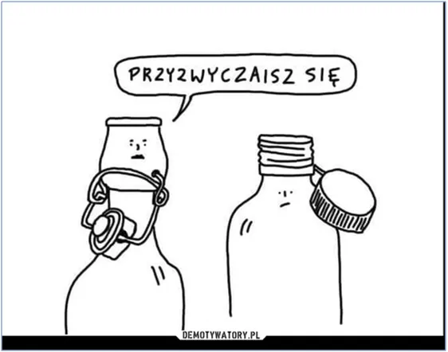
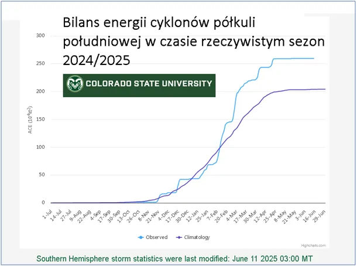
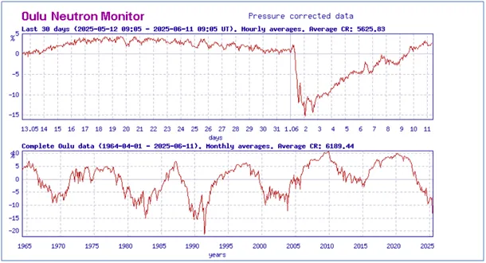
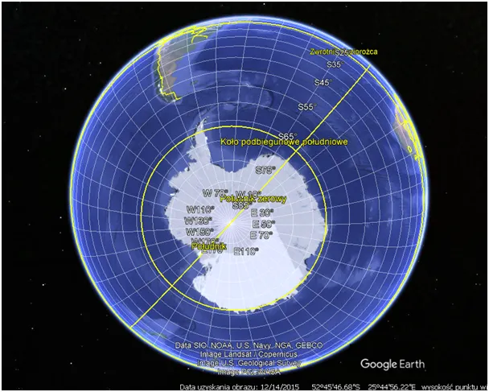

Czy przyklejanie zakrętek do butelek zatrzyma huragany?
Bilans energii cyklonów półkuli południowej w czasie rzeczywistym sezon 2024/2025.
2025.06.11
Domykamy sezon cyklonów na półkuli południowej, tam zbliża się okres zimowy. Pod koniec lata po tamtej stronie Ziemi łączna energia cyklonów wynosi 259,6 jednostek przy poziomie typowym 204,1 jednostek. Jest to nadwyżka o 27%. Należy ten bilans odnieść do globalnych danych i specyfiki półkuli południowej.

Z powodu braku kontynentów jak to ma miejsce na półkuli północnej i swobodnego przepływu oceanów wokół Antarktydy następuje lepsza wymiana ciepła między rejonami zwrotnikowymi a polarnymi i całkowita energia cyklonów półkuli południowej to zaledwie ok. 33% energii globalnej cyklonów. Jak widzimy na drugim, historycznym grafie bilanse roczne potrafią się wahać w przedziale między 600 a 1000 jednostek z trendem spadkowym od 30 lat. Więc taka zmiana nie jest znacząca. Obserwacje długoterminowe są wyznacznikiem bilansu cieplnego planety, bo roczne amplitudy mogą być spowodowane losowymi wydarzeniami w Kosmosie.

Ostatnio, nagle w wyniku burz słonecznych pod koniec maja, pierwszego czerwca obserwatorium natężenia promieniowania kosmicznego na powierzchni Ziemi w Oulu, w Finlandii, zanotowało rzadko obserwowany spadek aż o 15 %. To skutek zwiększenia właściwości ochronnej jonosfery jaka nagle się pojawiła po silnych wyrzutach cząstek ze Słońca w kierunku Ziemi. Taki spadek, jak widzimy na wykresie potrzebował aż 10 dni, aby sytuacja wróciła do normy. W tym czasie w ziemskiej atmosferze powstawało znacznie mniej chmur niż zwykle i bilans podgrzewania oceanów był dodatni. Akurat jesteśmy po ekstremum 11-letniego cyklu słonecznego i na drugim wykresie z Oulu widzimy, że spowodowało to znaczne obniżenie punktu minimum.

Jesteśmy zupełnie bezradni w stosunku do kosmosu na przebieg zjawisk w ziemskiej atmosferze, skala sił i energii, jakie rządzą tym procesem jest tak ogromna, że tylko eksplozja całych, ziemskich arsenałów jądrowych może zmienić pogodę na krótki okres, więc nasze wysiłki w przyklejaniu zakrętek do butelek są farsą.
Paweł Klimczewski